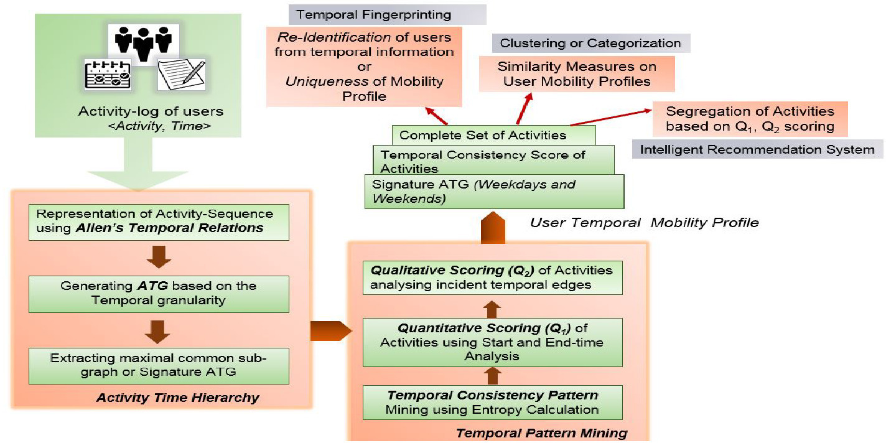
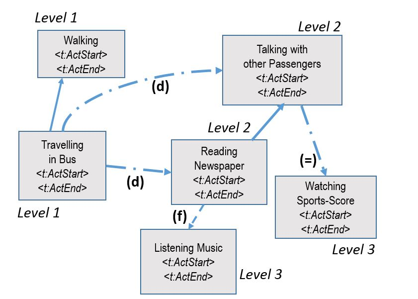
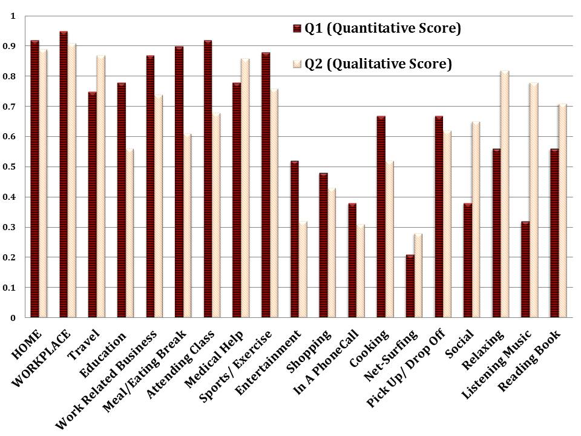

Several studies have shown that the spatio-temporal mobility traces of human movements can be used to identify an individual. However, this work presents a novel framework for activity-based mobility profiling of individuals using only the temporal information. The proposed framework is conducive to model individuals’ activity patterns in temporal scale, and quantifies the uniqueness measures based on certain temporal features of the activity sequence.
Keywords: Temporal modeling, Mobility trace, Human Activity, User profiling
ACM Reference Format: Shreya Ghosh, Soumya K Ghosh, Rahul Deb Das, and Stephan Winter. 2018. Activity-Based Mobility Profiling: A Purely Temporal Modeling Approach. In WWW '18 Companion: The 2018 Web Conference Companion,April 23–27, 2018 (WWW ’18 Companion), Lyon, France. ACM, New York, NY, USA 9 Pages. https://doi.org/10.1145/3184558.3186356
1 Introduction
With the pervasiveness of sensor technologies, wireless network advancements and location-acquisition technologies, various mobility information such as travel-logs, GPS traces, or activity information are readily available for analysis and providing a diverse range of location based services [1], namely, trip-planning [2], traffic-forecasting, or personalized recommendation systems. On the flip-side, mobility data is sensitive to privacy as it collects the whereabouts of individuals in space and time. Nevertheless, sharing only temporal activity patterns, without particular location information, may reduce the privacy concerns. While spatio-temporal characteristics of human mobility is known to provide significant insights about human mobility behaviour [3], the question is whether temporal characteristics alone may also be sufficient to map behavioral patterns. Further, time can be more accurately observed than location, while location information often suffers from uncertainty or imprecision. The major focus of this work is to come up with a temporal mobility-profiling framework that is capable to uniquely identify an individual. The fundamental idea of profiling, or fingerprinting, is to map large volumes of mobility data to a shorter representation capturing the unique temporal characteristics of individual movements. To the best of our knowledge, no existing work has undertaken the profiling of individuals based on temporal properties only.
To further progress in this research direction, this paper aims to model an individual's activity sequences in different temporal scales. Inherent patterns of activities will be used to profile (mobility profile) this individual, in order to derive their personal contexts and intentions. There are a number of questions to be addressed, namely, i) How does a person use her time at different levels of activity abstraction, and how can these daily activity sequences be modeled in a temporal fingerprint? ii) Are there some associations among the activities that show better consistency scores in different temporal scales, and how does this help to build a personalized recommendation system?
Problem definition: Consider a set of users and daily user activity logs (e.g., travelling, reading a book, being at work) over a time period. The objective is to represent the feature set of the activity patterns such that each user's (ui) mobility pattern over time can be represented and similarities among users’ mobility patterns can be measured by comparing their mobility profiles (MFi).
Contribution: The contributions can be summarized briefly as: i) Modelling the activity-sequence of people in different temporal scales using Allen's temporal calculus; ii) proposing an activity-time graph to capture the temporal properties of the activity-sequence in a hierarchical manner; iii) mobility profiling to fingerprint an individual's temporal mobility patterns using a variant of Graph-Edit distance; and iv) measuring the consistency-pattern by analyzing the variability or entropy of the activity-sequence over the studied time. The experimental results indicate that temporal mobility profiling is capable to capture the uniqueness of human mobility, and that the proposed temporal hierarchy provides an insight about the activity pattern of the users. Further, we explore the temporal consistency patterns of activity sequences, which is an important factor while measuring the similarity among users.
The paper is organized as follows: Section 2 reviews the recent progress in this research domain. Section 3 describes the different modules of a temporal profiling architecture. Experimental evaluations of the framework are shown in Section 4. Section 5 concludes the paper with some future directions of the work.
2 Related Works
Significant research efforts have been made in mobility pattern mining for travel demand and travel modes, and in the semantic analysis of these traces to explore human intent of the movement or activity recognition, including privacy-risk and anonymization techniques.
Most of mobility pattern mining research works have focused on the analysis of GPS trajectories of moving agents. Yu et al. [2] propose a framework to model an individual's location history with a tree-based hierarchical graph and infer location importance and habitual travel sequences. Zhao et al. [4] present statistical and unsupervised clustering based methods to understand individual metro passengers’ spatio-temporal patterns. There is work on summarizing GPS logs [5], user categorization [6], and finding the similarity among the trajectories of sets of users [7]. These examples are representative for a broad range of literature that consider both spatial and temporal properties of trajectories.
Understanding intent of the human movement to predict the next move and observing activity patterns of individuals are major aspects to build any context-aware intelligent recommendation system. Wun et al. [8] model the intra-urban human mobility by combining activity-based analysis and movement analysis from 15 million check-in records constructing a temporal transition probability matrix. Activity sequence prediction using Markov models and regression tree classifiers to predict the expected time until the next activity occurs [9] are some of the significant contributions in the present literature.
In principle, sharing location data poses security threats or privacy issues not only instantly but also because people follow more or less regular schedules in their daily life. Song et al. [3] observe 93% potential predictability of human dynamics exploring the mobility patterns of 50,000 mobile phone users for three months. Vice versa there is literature emerging on the obfuscation of location where inaccuracy and imprecision are introduced for the purpose of preserving privacy [10]. Duckham et al. [11] propose a spatio-temporal model of location privacy that represents an individual's movements over time with obfuscated location knowledge, as well as a speculation on how refinement of this knowledge might invade the individual's privacy.
Our proposed approach differs from the existing studies in many aspects. Firstly, we do not include location information in our analysis since sharing location information may exhibit privacy intrusion. Further, instead of using time as a discrete feature, we model the activity sequences of individuals using several qualitative temporal relations. Previously, temporal correlations between mobility patterns have been analyzed by segmenting time into different time-slices or time-intervals, while we propose a temporal mobility framework, where activity-patterns are represented using several hierarchical levels based on the temporal relations. 
Figure 1:Workflow of Temporal Mobility Profiling framework.
3 Temporal Mobility Profiling Framework
This paper proposes a conceptual framework to describe an individual's activity sequences purely by time, and in different temporal scales. The activity sequences will be used to profile the individual, in order to derive their personal context and intentions.
Figure 1 depicts the overview of the proposed framework. From the activity log of the persons (the users of a particular service), the activity sequence is mapped to an activity-time graph (ATG), using qualitative temporal relations followed by the extraction of signature activity patterns of the individual persons. A temporal pattern mining module analyzes temporal consistency of activities and obtains a user temporal mobility profile. The mobility profiles can be used for the identification of users, for similarity measurements of user profiles, and for analysis on the temporal consistency pattern of the activities. Typically, similar profiles among users may help in clustering or categorization of users based on their activity patterns whereas identification accuracy depicts the uniqueness measures of the mobility profiles. And analyzing consistency patterns of activities in different temporal scales is helpful in intelligent recommendation system.
3.1 Preliminaries
Here, we define some preliminary concepts that are subsequently used in this paper.
Activity NodeAn activity node (A) is defined as an ordered pair (ai, Ti), where ai denotes the activity name performed by the individual and Ti represents the time interval of the activity, consisting of a start time $t^s_i$ and finish time $t^f_i$. Table 1 shows some activity names and temporal values of the activities. Each row of Table 1 constitutes an activity node. The basis for modelling activities has been provided by activity theory [12]. Activity theory is conceptualized by a hierarchical structure where an activity can be broken down into actions and subsequently actions into sub-actions and so on. In this work, activity nodes are modeled in a hierarchical representation based on the time interval Ti. 
Figure 2:Mapping of Activity sequences to Activity Time Graph.
Activity SequenceAs shown in Figure 2, a pair of activity nodes are connected following their temporal relations, based on the start and finish time of the activities.
TR denotes the qualitative temporal relations between any two activities as represented in Table 2. As time is monotonically increasing, temporal logic postulates statements such as “an activity performed in interval T1 is before interval T2 if $t^f_1 {\lt} t^s_2$”. Such reasoning about time is established on the notion of (singly-connected) time intervals and binary qualitative relations among them, as for example defined in Allen's temporal calculus [13]. Each time interval has non-zero duration, i.e. $\forall i: \, t^s_i {\lt} t^f_i$, for activity i.
Disjoint and Concurrent Activity SetThe disjoint activity set is defined in the temporal scale:
In the example of Table 1, travelling on a bus and walking are disjoint activities while the other activities are all embedded within travelling on a bus.
Activity Time Graph (ATG)An ATG is the collection of all activities performed by the individual in a day. The ATG levels are introduced following time hierarchy of activities and partitioning the disjoint and concurrent set of activities. Thus, the ATG = (A, E), representing activities of users in nodes A and the temporal relationships between activities in edges E, also provides a function $h: A \rightarrow \mathbb {N}$ assigning a level number l ≥ 1 to each node ai ∈ A, and a function f: E → TR assigning this temporal relationship for each edge ei ∈ E. Of the activities in Table 1 [also depicted in Figure 2], travelling on a bus and walking are Level 1 activities (l1), and reading a newspaper, talking with other passengers and watching sports scores – the activities embedded in or concurrent with the l1 activity travelling on a bus – are Level 2 activities (l2). Again, listening music is embedded in an l2 activity, say, reading a newspaper, therefore is a l3 activity.
Table 1:Sequence of activities performed by a user.
ActivityType (ai)
StartTime ($t^s_i$)
FinishTime ($t^f_i$)
Travelling on a bus
9.30
10.50
Reading a newspaper
9.45
10.20
Listening to music
10.10
10.20
Talking with other passengers
10.30
10.40
Watching sports scores
10.30
10.40
Walking
10.52
11.00
Table 2:Temporal relationships between two activities following Allen's temporal calculus.
Temporal relationship
Network representation
Time-interval property
a1 before (b) a2
a1-(b)- > a2
$t^f_1 {\lt} t^s_2$
a1 after a2
a1 < -(b)-a2
$t^f_2 {\lt} t^s_1$
a2 during (d) a1
a1-(d)- > a2
$(t^s_1 {\lt} t^s_2)\wedge (t^f_2 {\lt} t^f_ 1)$
a1 during a2
a1 < -(d)-a2
$(t^s_2 {\lt} t^s_1)\wedge (t^f_1 {\lt} t^f_ 2)$
a1 starts (s) a2
a1-(s)- > a2
$t^s_1=t^s_2 \wedge t^f_ 1 {\lt} t^f_2$
a2 starts a1
a1 < -(s)-a2
$t^s_1=t^s_2 \wedge t^f_ 2 {\lt} t^f_1$
a1 finishes (f) a2
a1 < -(f)-a2
$t^f_1=t^f_2 \wedge t^s_ 2 {\lt} t^s_1$
a2 finishes a1
a1-(f)- > a2
$t^f_1=t^f_2 \wedge t^s_ 1 {\lt} t^s_2$
a1 meets (m) a2
a1-(m)- > a2
$t^f_ 1 = t^s_2$
a2 meets a1
a1 < -(m)-a2
$t^f_ 2 = t^s_1$
a1 equals (e) a2
a1-(=)-a2
$t^f_ 2 = t^f_1 \wedge t^s_ 2 = t^s_1$
a1 overlaps (o) a2
a1-(o)- > a2
$t^s_2 {\lt} t^f_1 {\lt} t^f_2$
a2 overlaps a1
a1 < -(o)-a2
$t^s_1 {\lt} t^f_2 {\lt} t^f_1$
3.2 Activity-Time Hierarchy
An activity sequence (including overlapping of activities) is a series of activities to achieve some desired goals. The sequence is represented by nodes (activities) and edges (temporal relations between the connected activities). Table 2 depicts the complete set of temporal relations. Here, all possible temporal relations of two activities (a1, a2) are represented using the temporal interval properties of start ($t_1^s, t_2^s$) and finish time ($t_1^f, t_2^f$).
Since Allen's temporal calculus is jointly exhaustive and pairwise disjoint, and since by the definition above any activity is singly-connected between a start and end, any sequence of two activities has exactly one of these qualitative temporal relationships. Hence, a temporal profiling model based on Allen's temporal calculus is complete and unambiguous.
3.2.1 Generating time-based hierarchical structure of activity-nodes. The activities performed by an individual can be modeled in a hierarchical structure, based on the granularity of the temporal scale. In order to generate a meaningful hierarchical activity structure, additional constraints are imposed on the activity selection. Activities are often associated with points of interest (POI) (say, BeingAtHome or BeingAtUniversity), and spatial separation clearly constructs a disjoint subset of activities. Also the change of location (e.g., travelling) is an activity disjoint with POI-bound activities. From the next level, nodes are concurrent activities in the time-scale with upper level activities. Therefore people are involved either in some POI-bound activities or travelling, and thus these activities comprise of Level 1. From the next level an activity selection algorithm, Greedy-Iterative-Activity Selector, is deployed to find out the concurrent activities of Level 1 and disjoint activities in each of the levels. The optimal solution of the problem returns a maximum number of such disjoint activities. Due to the limitation of multi-tasking capabilities of individuals the number of concurrent activities becomes less with increasing depth of concurrent levels. Moreover, this work proposes an iterative matching between two ATGs based on the levels. Therefore, greater number of activities in upper levels gives the provision of discovering larger sequences of matches.
After determining the levels of the activities following the above procedure and time-hierarchy rule, activity-splitting may be required for overlapping activities. It might happen that an activity at a lower level (say Level 2) overlaps time-wise with the last activity of a higher level (say Level 1), which violates the strict time hierarchy rule; then the Level 2 activity is divided in two activity-instances and the non-overlapping part moves to the upper level. For example, for an activity log such as: [Travelling, < 9.30-10.50 > ]; [Listening to music, < 10.40-11.00 > ], the time hierarchy of activities will be of the form: [Travelling, < 9.30-10.50 > , Level 1]; [Listening to music, < 10.40-10.50 > , Level 2]; [Listening to music, < 10.50-11.00 > , Level 1]. Splitting is required as the activity hierarchy not only represents activities in several time scales but also provides an insight how people performs concurrent activities. The splitting leads to a proper tree structure and thus an unambiguous representation of an activity-time hierarchy.
In Level 1, A(1) =(ActivityName, startTime, finishTime) information is captured, and f assigns edge information based on the temporal values of each node. From the next level, all nodes are represented by A(l)=(l, p, T), where l is the level or height of the activity-node, T is the list of concurrent temporal relations among the activities of same level and p is the parent activity where A(l) is embedded. The concept of a hierarchical representation is useful for comparing ATGs. It allows to analyze the activity types at macro-levels of the input ATG, and utilizes the knowledge of different levels in different applications.
3.2.2 Extracting individual signature activity patterns. To come up with the mobility profile of an individual the most followed activity sequences need to be extracted. The signature ATG captures regular activity sequences over a studied period. It leads to the classical problem of maximal-common sub-graphs from a pair of ATGs, as the daily activity sequence of an individual is represented as ATG. For this purpose, the graph edit distance measurement of all ATGs of the individual is used since Bunke [14] formally proved that under a given cost function the graph edit distance and the maximum common subgraph are equivalent problems. Generally, the graph edit distance between two graphs (G1, G2) is defined as:
c(ei) denotes the cost of edit operations. In this paper, γ(G1, G2) includes graph-edit operations on edges (edge insertion, edge remove, edge substitution, or modification of temporal attributes) and on nodes (modifications of temporal information). The edit distance is computed by finding the sequence of graph-edit operations which minimizes the cost of the path traversing from source graph to target graph. The features of the maximal common sub-graph are used as the signature features between source and target graph.
While defining sub-graphs of ATGs, also the levels are considered, along with the edge and node sets.
Let ATG1 = (A1, E1, l1, f1) and ATG2 = (A2, E2, l2, f2) be two ATGs, then ATG2 is a subgraph of ATG1, and is represented by ATG2⊆ATG1, if
A2⊆A1
|l2| ≤ |l1|
f1(ai, aj) = f2(ai, aj); ∀(ai, aj) ∈ A2 × A2
Let ATG1 = (A1, E1, l1, f1) and ATG2 = (A2, E2, l2, f2) be two ATGs, then a graph isomorphism is defined by edge-preserving vertex bijection mapping IG: A1 → A2 in all levels,
a1 = IG(a2); ∀a1 ∈ A1
f1(ai, aj) = f2(IG(ai, aj)); ∀(ai, aj) ∈ A1 × A1
ATG3 is the common subgraph of ATG1 and ATG2 if there is a graph isomorphism between ATG3 to ATG1, and between ATG3 to ATG2. Again, ATG3 is the maximal common subgraph if there is no other common subgraph of ATG1 and ATG2 that has more edges than ATG3.
The edit distance ged(ATG1, ATG2) of two ATGs is computed as:
\begin{equation} { \begin{split} ged(ATG_1, & ATG_2)= min \left\lbrace C_T(g)| \right. \\ & \left. g \;is\; an \; ecgm \; from \; ATG_1 \; to \; ATG_2 \right\rbrace \end{split} } \end{equation} (5)
Here, ecgm is an error-correcting graph matching function that transforms ATG1 to ATG2 following graph-edit operations. A variation of Bunke's cost function [14] is applied for computing the edit-distance in each level of the ATGs.
Cns, Cni, Cnd, Ces, Ced, and Cei denote node-substitution, node-insertion, node-deletion, edge-substitution, edge-deletion and edge-insertion. For node-substitution, when both the activity name and the time interval match, the cost is zero. When only the activity name matches but the time intervals show a concurrent relation, the cost function is changed based on the time modification required to match both the nodes. Bunke [14] proposed obtaining ecgm by summing up all costs of edit operations imposed by the mapping:
$ATG_1^{^{\prime }}(A_1^{^{\prime }},E_1^{^{\prime }})$ and $ATG_2^{^{\prime }}(A_2^{^{\prime }},E_2^{^{\prime }})$ are sub-graphs of ATG1 and ATG2, respectively.
Generally, the distance between two graphs G1 and G2 is measured as:
Here, mcs refers to the maximal common sub-graph of G1 and G2. Typically, |G| is represented by the number of nodes or number of edges. In the present paper, however, nodes at different levels carry significant importance, hence additionally the levels and edges are used in the computations. $|ATG|=\sum _{l=1}^{m}l \times |e(l)|$, where |e(l)| is the number of temporal edges in level l. The edit-distance computation is applied in an iterative way: First, the distance between the Level 1 elements of the ATGs is computed, following by the lower levels. Reasonably, while measuring distances among Level 2 nodes (embedded within Level 1 nodes), the distance values of Level 1 nodes need to be considered. Hence, the total cost CT is given as:
An iterative computation (based on the levels of ATG) of graph-edit distance is proposed because the levels of the ATGs not only represent activities in different temporal scales but inherently present semantic information. For example, listening to music during eating breakfast at home is different from listening to music while travelling. The objective is not only extracting the maximal sub-graph but providing more weight to different levels of the ATGs in the computation.
The method of extracting signature activity patterns from the ATGs is deployed by partitioning the weekdays and weekend ATGs. For both sets of ATGs pair-wise edit-distance is measured. The common disjoint sub-sequences of activities (node-substitution) are extracted, followed by analyzing the temporal similarity relations in the embedded sub-graphs for each nodes.
3.3 Temporal Pattern Mining
In this section, temporal patterns of activities are analyzed, which involves analyzing temporal consistency patterns of activities, and quantitative and qualitative scoring of activities.
3.3.1 Temporal consistency patterns of activities. Temporal consistency patterns are observed from the variability of activity performance on the time scale where time is measured based on time intervals Ti and duration of the activity.
The variability of a random variable is generally measured by entropy, which is, in information theory, the average of the information content in a message. Shannon's entropy (H) [15] is defined as:
where $\sum _{j=1}^n p_j=1$, and p1, p2, ..., pn are the empirical probability distributions. There are two obvious questions while measuring the overall variability of an activity-time pair: a) Vi: What is the variability measure of each activity performed by an individual in the studied period? b) VT: How (in terms of variability of activities) an individual uses her time? To analyze the variability of an activity (say ai), we study the startTime and finishTime of all occurrences of ai in the activity log. Our goal is to partition the activity instances into several temporal classes where startTime and finishTime of all members (or activity instances of ai) of one class remain within a threshold value (tthresh). Therefore variability of the activities is calculated on the temporal scale, i.e., how consistently an individual performs the activity, or starts and finishes the activity within a time threshold. For measuring the startTime and finishTime variability, the frequency of the activities starting or finishing at the same time is calculated.
Observe the activity-sequences for the complete studied-time and extract the total number of instances each activity occurs. Say, activity ai occurs N times in the study period.
Extract the unique timestamps, m (for startTime and finishTime) for the activity and split up the data into m classes.
Count the frequency (fj) for each such classes j.
Finally, estimate the entropy following Equation 11.
Using Shannon's entropy H, we can define the variability (Vi) for each activity (ai) as:
Say, a user performed activity ai N times over the studied period, and the activity is done on m unique time intervals or classes. The empirical probability distribution (pj) is how likely the activity takes place in the same time intervals of other instances of the activity. Larger values of Vi indicate more variability, thus less consistency and smaller values indicate more consistent pattern of the particular activity in the temporal scale.
To calculate the variability of the activities in different time ranges of a day (VT), the day is partitioned into two-hour time slices. For each time slice the activities at each level are extracted for a calculation of the probability of the occurrence of these activities in the time slice.
3.3.2 Quantitative and qualitative similarity measures on the temporal scale. The quantitative score (Q1) and qualitative score (Q2) of an activity are consistency values between 0 and 1 which represent whether the activity is being performed in a regular time-interval (Q1) or it follows a consistent sequence (Q2). For quantitative measures, start time and finish times of the activity-nodes are incorporated, while temporal relations are compared and analyzed in the qualitative analysis.
For comparisons of start and finish times, a threshold value tthresh = (finishTime − startTime)/D has been considered. In our experiment we have selected D = 10 empirically, i.e. 1/10 of the duration of the activity. Two nodes are quantitatively similar when the start time and finish time of the nodes are within tthresh time difference. In the iterative approach through the levels of the hierarchy, first the similar activity nodes of Level 1 are extracted, then the embedded activity nodes within the common nodes are extracted, and this continues till the last level of the ATGs has been considered. Algorithm 1 describes the procedure of computing Q1 or quantitative score of each activity-name. For brevity, start and finish time of the activities are denoted by tstart and tfinish and the time range of each temporal class or partition is defined by Tstart and Tfinish. The max-priority queue of the temporal classes is initialized such that priority is maintained by the cardinality of the temporal classes. After extracting the unique activity names the number of the temporal classes for the activity names are estimated. Then the quantitative score is measured by calculating (1-variability) of the activity based on the temporal interval.
In the qualitative scoring, temporal attributes (TR) of all incident edges of an activity node are analyzed. Here, the incident edge captures the temporal information: how one activity is embedded within another (different level) and the sequence it follows (predecessor and successor nodes in the same level). A procedure similar to Algorithm 1 is followed except the temporal classes are generated by comparing the temporal information of the edges for each activity node.
It is well known that peoples’ activity sequences are to a large degree habitual; these habits can follow some qualitative and some quantitative measures. For example, a person could take always medicine after having breakfast (qualitative), but not necessarily at a fix time (quantitative). In this regard, a sequence of activities (taking medicine after having breakfast) shows better qualitative scores than quantitative measurements. In another example, travelling to university and attending class occurs at fix times, as these are scheduled activities.
3.4 Mobility profiling and dissimilarity of temporal activity information
A mobility profile MF = (A[], C[], ATG[]) consists of three components: An exhaustive set (A) of activity names ai along with the frequencies fi of these activity names performed by the individual over the whole studied time (i.e., pairs of (ai, fi)), a list C of temporal consistency scores of these activity names, and a list of ATGs storing the ATGs of an individual user, analyzed typically separately for weekdays and weekends.
Variability measures serve as a major step for uniqueness measures among the individuals. Particularly, three features of mobility profiles can be considered: p1, the set of unique activities and their frequency performed by the users, p2, the temporal consistency scores among the common set of activities between any pair of users, and p3, the graph-edit distance between a pair of ATGs. Similarity is related to the commonality of two entities or two feature values. For measuring the similarity among a set of activity nodes, the common activity names between two mobility profiles are extracted along with the frequency of the activities performed. For example, assume the two mobility profiles of two users (ui, uj): MFi(Ai, Ci, ATGi) and MFj(Aj, Cj, ATGj), where |Ai| = Ni and |Aj| = Nj. After a linear scan, the common activity names between Ai and Aj can be extracted, |Ai∩Aj| = m. The relative number of occurrences of the activity ap is denoted by fp.
The dissimilarity value based on p1 feature between Ai and Aj is:
Using Equation 12, the dissimilarity values between any pair of activity names is calculated based on their occurrences in the studied time. The value of $D_{p_1}$ lies in the interval [0,1].
Next, the dissimilarity value among the consistency scores (or, 1-variability) (duration and start time) of the common activity names are measured. For each of the consistency scores, the dissimilarity value is:
where Cr, i is the consistency score of activity-name ar of mobility profile MFi. To calculate the dissimilarity among ATGs of MFi and MFj, the edit distance among the ATGs is computed as described previously.
Dissimilarity among n users can be represented as a n × n dissimilarity matrix, where each value (i, j) represents distinctness of users i and j with regard to their temporal activity patterns. Hence, normalized (between 0 and 1) dissimilarity values of p1, p2, and p3 need to be aggregated. The aggregated dissimilarity value is a weighted average of the dissimilarity values of each feature variable.
where wijk is the weight of each feature variable, k represents the feature variables, and dijk is the dissimilarity value between mobility profile i, j for the feature variable k. Also, similarity values can be calculated as (1 − Dij).
4 Experimental observations
In order to illustrate and evaluate the temporal profiling, we conducted a survey to collect daily activity data of individuals. Participants (from two universities in two different countries) logged their daily activity in different time-scales in a web-based survey form. In this activity survey, 30 activities were specified and the survey had been designed to allow to log also concurrent activities in temporal scales.
Table 3 shows the summaries of the data collected from eight participants over two, three or four weeks. In the table, an ATG is listed as G(A, E, l), where A is the number of activity nodes, E is the set of temporal relations, and l denotes the levels of the ATG of the particular mobility profile. The users’ regular activity patterns are represented by Weekday-ATGs and Weekend-ATGs, which are shown in Table 3 by G1 and G2. However, some of the users (u1, u2, u6) have three ATG descriptions, which follows from the fact that maximal sub-graphs are not unique. In our experiment, we observe two maximal sub-graphs (from weekday-ATGs) for these users in the similarity matching procedure, and include both the ATGs in their mobility profile. By all means, users may have two (or more) ATGs in their mobility profile, if they follow two regular activity-patterns over the weekdays or weekends.
Table 3:Temporal activity statistics and ATGs of the eight participants.
userId
No. of days
No. of activities
Avg no. of activities/day
Avg duration (hr) of activities/day
ATG descriptions
Level 1
Level 2
Level 3
u1
28
26
24
22
14.5
5.6
G1(16, E1, 3), G2(13, E2, 3), G3(18, E3, 3)
u2
21
21
18
20
15
4.5
G1(16, E1, 3), G2(20, E2, 3), G3(17, E1, 3)
u3
28
18
14
22.5
16
6
G1(11, E1, 3), G2(14, E2, 3)
u4
21
14
12
20
15.5
3.2
G1(12, E1, 2), G2(15, E2, 2)
u5
14
18
15
21.5
16
7.6
G1(13, E1, 3), G2(17, E2, 3)
u6
18
15
14
21
14.6
7.2
G1(14, E1, 3), G2(10, E2, 3), G3(11, E1, 3)
u7
14
16
14
18
12
6.5
G1(14, E1, 3), G2(12, E2, 3)
u8
21
25
16
22
15
8
G1(15, E1, 3), G2(14, E2, 3)

Figure 3:Temporal quantitative and qualitative scores of activities.
The uniqueness measure is defined as $ \xi = \frac{N-\sum \delta _o}{N-1}$, where N is the number of total participants (there are eight participants in our experiment), δo defines the number of user temporal profile match with the input activity sequences. Using a random sampling approach, any activity sequences (test data) from each individual's (ui) mobility profiles are selected, and similarity among all other user's temporal mobility profiles are measured based on different temporal scales (l1, l2, l3) of ATGs. δo is the number of user profiles having similarity scores with the input sequence greater than 0.80.
Table 4:The ξ score on 8 samples of user temporal activity sequences on weekdays.
-
l1(Q1)
l1(Q2)
l2(Q1)
l2(Q2)
l3(Q1)
l3(Q2)
l1 + l2(Q1)
l1 + l2(Q2)
l2 + l3(Q1)
l2 + l3(Q2)
ATG(Q1)
ATG(Q2)
ATG
1
0.285
0.142
0.428
0.428
0.142
0.428
0.428
0.571
0.285
0.428
0.428
0.571
0.714
2
0.428
0.285
0.428
0.571
0.285
0.285
0.571
0.714
0.285
0.285
0.571
0.857
0.857
3
0.142
0.142
0.285
0.428
0.285
0.428
0.428
0.571
0.285
0.142
0.428
0.571
0.714
4
0.285
0.142
0.428
0.571
0.285
0.285
0.714
0.857
0.285
0.428
0.714
0.857
0.857
5
0.571
0.428
0.714
0.714
0.428
0.428
0.857
0.857
0.428
0.571
0.857
0.857
1.0
6
0.428
0.285
0.571
0.571
0.428
0.428
0.714
0.857
0.428
0.428
0.857
0.857
0.857
7
0.285
0.285
0.428
0.571
0.428
0.285
0.714
0.714
0.428
0.571
0.714
0.714
0.857
8
0.285
0.142
0.428
0.428
0.285
0.285
0.714
0.857
0.428
0.285
0.714
0.857
0.857
Table 4 shows the ξ value for 8 samples. l1 + l2 provides better uniqueness scores than individual levels l1 or l2. The table shows also that temporal embedded information is more distinctive than temporal resolution information. To be more precise, if each level of the ATGs is analyzed separately, the average duration of l1 activities is greater than for l2, which is greater than for l3. Consequently, exploring only activity sequences in individual levels provides analysis in different scales of temporal resolution, and disregards all concurrent activity patterns. Another observation reveals that uniqueness scores differ for Q1 and Q2 measurements. For this purpose, the activities are partitioned in two sets where elements of one set show better quantitative consistency whereas the other set is more consistent on qualitative analysis. The similarity matching procedure incorporating the segregation of activities based on Q1 and Q2 computation yields better uniqueness scores (last column ATG in Table 4) in this experiment.
These experimental findings are significant in many ways. Firstly, they demonstrate the capacity of the theoretical framework presented above to characterize and compare the activity sequences of individuals just based on their temporal patterns in a meaningful manner. Although the number of participants of the experiment is less [8 participants], it is sufficient for experimentation as the work investigates individual's activity pattern. Further, detailed activity-logs [each participant's activity log of at least 14 days and comprising average 18-20 activities/ day] of the participants are collected. This dataset allows illustrating the framework and indicates that temporal profiles are individualized. It has also been shown that these signature patterns are not necessarily unique, and that more than one ATG may be required to capture an individual's regular activity patterns. This was expected for weekdays and weekends, but had also occurred within weeks, for example for individuals with an employment on some days of the week. Therefore, any personalized recommendation system must consider all ATGs to provide meaningful efficacy. Moreover, Figure 3 shows temporal quantitative and qualitative scores of activities and differences of these scores for each activity clearly shows the need of segregation of the activities for an intelligent recommendation system. Users can also be categorized based on their temporal activity patterns, and analyzing consistent time slots for performed activities may provide better classification accuracy. Finally, it turns out that the embedded temporal analysis is more informative than the temporal resolution analysis. Therefore there exists a strong reason to hierarchically represent activity sequences based on the temporal relations among them.
5 Conclusion
In this paper, a conceptual framework has been presented to model mobility states and activity patterns at an individual level using purely temporal information, and generating mobility profiles in an optimal way. Such a framework is the core of any context-aware application provision that leverages the temporal information to assist in various personalized activities. In future this can be extended to predict the next activity states and user categorization using their current (or past) activity state(s) and temporal information through a stochastic or machine learning-based approach. The final goal of this research direction, however, is building a personalized recommendation system that will be capable to learn activity patterns over time and provide alerts based on activity contexts. It has been shown that the proposed hierarchical representation of activities will be beneficiary and informative for such a context-aware recommendation system.
REFERENCES
Yu Zheng. Trajectory data mining: an overview. ACM Transactions on Intelligent Systems and Technology (TIST), 6(3):29, 2015.
Yu Zheng, Lizhu Zhang, Xing Xie, and Wei-Ying Ma. Mining interesting locations and travel sequences from gps trajectories. In 18th International Conference on World Wide Web, pages 791–800. ACM, 2009.
Chaoming Song, Zehui Qu, Nicholas Blumm, and Albert-László Barabási. Limits of predictability in human mobility. Science, 327(5968):1018–1021, 2010.
Juanjuan Zhao, Qiang Qu, Fan Zhang, Chengzhong Xu, and Siyuan Liu. Spatio-temporal analysis of passenger travel patterns in massive smart card data. IEEE Transactions on Intelligent Transportation Systems, 2017.
Shreya Ghosh and Soumya K Ghosh. Modeling of human movement behavioral knowledge from gps traces for categorizing mobile users. In 26th International Conference on World Wide Web Companion, pages 51–58. International World Wide Web Conferences Steering Committee, 2017.
Shreya Ghosh and Soumya K Ghosh. Thump: Semantic analysis on trajectory traces to explore human movement pattern. In 25th International Conference Companion on World Wide Web, pages 35–36. International World Wide Web Conferences Steering Committee, 2016.
Quannan Li, Yu Zheng, Xing Xie, Yukun Chen, Wenyu Liu, and Wei-Ying Ma. Mining user similarity based on location history. In 16th ACM SIGSPATIAL International Conference on Advances in Geographic Information Systems, page Article 34. ACM, 2008.
Lun Wu, Ye Zhi, Zhengwei Sui, and Yu Liu. Intra-urban human mobility and activity transition: Evidence from social media check-in data. PLOS ONE, 9(5):e97010, 2014.
Bryan Minor and Diane J Cook. Forecasting occurrences of activities. Pervasive and Mobile Computing, 38:77–91, 2017.
Matt Duckham and Lars Kulik. A formal model of obfuscation and negotiation for location privacy. In International Conference on Pervasive Computing, pages 152–170. Springer, 2005.
Matt Duckham, Lars Kulik, and Athol Birtley. A spatiotemporal model of strategies and counter strategies for location privacy protection. Lecture Notes in Computer Science, 4197(2006):47–64, 2006.
Rahul Deb Das and Stephan Winter. A context-sensitive conceptual framework for activity modelling. Journal of Spatial Information Science, 12:45–85, 2016.
James F Allen. Maintaining knowledge about temporal intervals. Communications of the ACM, 26(11):832–843, 1983.
Horst Bunke. On a relation between graph edit distance and maximum common subgraph. Pattern Recognition Letters, 18(8):689–694, 1997.
Claude E Shannon and Warren Weaver. The mathematical theory of communication. University of Illinois press, 1998.
FOOTNOTE
This paper is published under the Creative Commons Attribution 4.0 International (CC-BY 4.0) license. Authors reserve their rights to disseminate the work on their personal and corporate Web sites with the appropriate attribution.